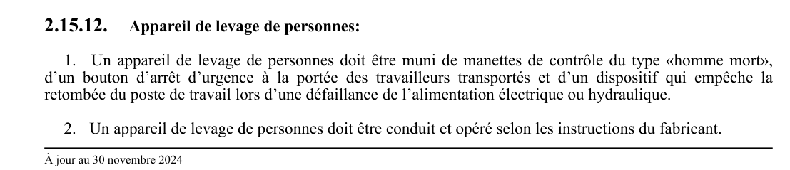

art-2.15.12-CSTC : appareil de levage de personnes
Appareil de levage de personnes: 1. Un appareil de levage de personnes doit être muni de manettes de contrôle du type «homme mort», d'un bouton d'arrêt d'urgence à la portée des travailleurs transportés et d'un dispositif qui empêche la retombée du poste de travail lors d'une défaillance de l'alimentation électrique ou hydraulique.
🌐 LegisQuébec · 📄 PDF officiel
Texte officiel
Appareil de levage de personnes:
1. Un appareil de levage de personnes doit être muni de manettes de contrôle du type «homme mort», d’un bouton d’arrêt d’urgence à la portée des travailleurs transportés et d’un dispositif qui empêche la retombée du poste de travail lors d’une défaillance de l’alimentation électrique ou hydraulique.
2. Un appareil de levage de personnes doit être conduit et opéré selon les instructions du fabricant.
3. Un appareil de levage de personnes ne doit servir qu’à déplacer des personnes, de l’outillage et les matériaux nécessaires à l’exécution de leurs travaux, et ce, sans dépassement de sa charge nominale et en respectant les spécifications du fabricant.
4. La plate-forme de travail d’un appareil de levage de personnes doit être ceinturée d’un garde-corps.
5. Il est interdit à tout travailleur prenant place sur la plate-forme de travail d’un appareil de levage de personnes d’utiliser un garde-corps, un madrier, une échelle ou tout autre article se trouvant sur la plate- forme, ou à l’intérieur de celle-ci, pour augmenter sa portée ou la hauteur qu’il peut atteindre.
6. Dans un appareil à élévation multidirectionnelle, dont la plate-forme de travail peut s’écarter horizontalement du châssis porteur, le travailleur doit porter un harnais de sécurité relié par une liaison antichute à un système d’ancrage prévu par le fabricant de l’appareil de levage ou, à défaut, à un ancrage, conformément au paragraphe 1 du premier alinéa de l’article 2.10.15.
7. L’opérateur d’un appareil de levage de personnes qui effectue un déplacement doit:
a) limiter la vitesse de déplacement en fonction des conditions, telles que le type de sol, la visibilité, la pente, la présence de personnes et de tout autre facteur pouvant entraîner des collisions, des blessures ou des renversements;
b) se tenir à une distance sécuritaire des obstacles, des pentes descendantes, des fondrières, des rampes ou de tout autre danger;
c) s’assurer de bien voir le sol et le trajet à parcourir;
d) s’assurer que toute personne se trouvant dans l’aire de travail concernée est informée du déplacement de l’équipement et qu’il n’y a personne dans sa trajectoire;
e) visualiser la zone de déplacement dans le sens du mouvement de la plate-forme. Lors de la visualisation effectuée conformément au sous-paragraphe e du paragraphe 7, lorsque l’opérateur constate que des structures aériennes environnantes ou des obstacles présentent un risque de coincement ou d’écrasement pour toute personne se trouvant sur la plate-forme, il doit prendre les mesures nécessaires pour éliminer ce risque. Lorsqu’il est impossible pour toute personne de demeurer debout sur la plate-forme, par exemple en raison du passage de l’équipement sous une embrasure de porte, l’opérateur doit manœuvrer l’équipement à partir du sol.
8. Un registre des inspections et des réparations doit être conservé par le propriétaire de l’appareil de levage de personnes.
9. Le manuel d’opération du fabricant de l’appareil de levage de personnes doit être rangé sur l’appareil dans le compartiment résistant aux intempéries.
10. Il est interdit d’utiliser un appareil de levage de personnes, autre qu’un ascenseur de chantier ou une plate-forme de transport se déplaçant le long de mâts, pour transférer des personnes d’un niveau à un autre afin d’accéder à un lieu de travail à l’extérieur de celui-ci, sauf lorsque les conditions suivantes sont satisfaites:
a) une personne compétente démontre, après avoir analysé les risques liés à l’accès à ce lieu de travail, que l’accès à ce lieu ne peut se faire au moyen d’une échelle, d’un escalier, d’un échafaudage, d’un ascenseur ou d’une plate-forme de transport se déplaçant le long de mâts;
b) un ingénieur confirme, par écrit, que l’utilisation d’un appareil de levage de personnes pour cette fin est sécuritaire;
c) cet appareil de levage de personnes est utilisé conformément à une procédure de travail signée par un ingénieur qui tient compte des recommandations du fabricant et de la norme Mobile elevating work platforms – Safety principles, inspection, maintenance and operation CSA B354.7. Cette procédure doit être spécifique à ce lieu de travail. Un appareil de levage de personnes peut toutefois être utilisé dans le cadre d’un plan de sauvetage pour secourir des personnes.
11. À défaut de spécifications du fabricant, un appareil de levage de personnes ne doit pas être utilisé au- delà d’une vitesse de vent de 45 km/h.
12. Un appareil de levage de personnes doit être pourvu d’un avertisseur sonore qui se met en marche lorsque le déplacement au sol est motorisé.
Texte de l’article 2.15.12 CSTC, extrait de la couche texte du PDF officiel (page 33), sans OCR ni retouche. La capture ci-dessous et le PDF font foi.
{kind=link}

Toucher l'image pour l'agrandir🔗 CSTC.pdf : page 33 · texte à jour au 30 novembre 2024
📚 Source légale : D. 1393-2024, a. 7. · LégisQuébec
Voir aussi
- art. 2.15.11
- art. 2.15.13
- ⚖️ Loi habilitante : LSST
- ↑ Section 2 : Dispositions générales
Pages qui pointent ici (3)
- art-2.15.11-CSTC : monte-matériaux Recueil législatif
- art-2.15.13-CSTC : engin élévateur à nacelle Recueil législatif
- CSTC : Section 2 : Dispositions générales Recueil législatif